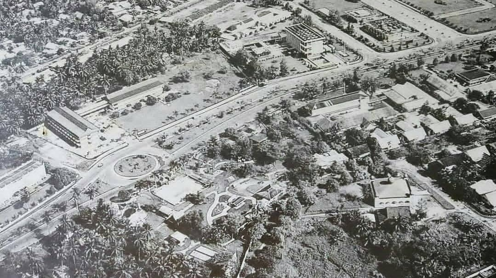

Perbandingan Riau Zaman Dulu Dengan Zaman Sekarang

Foto Riau Zaman Sekarang

dari abad ke abad
Pekanbaru memiliki objek wisata yang menarik, jika kita menelusuri kampung-kampung yang berada di tepi Sungai Siak yang menjadi daerah cikal-bakal Kota Pekanbaru kini. Objek wisata yang dapat dikunjungi diantaranya adalah, Rumah Singgah Tunak Kadi, Rumah Tenun Kampung Bandar yang berdiri sejak 1890, rumah-rumah panggung dari kayu yang sudah berdiri puluhan tahun, pelabuhan lama Pekanbaru yang dibangun oleh Belanda pada sekitar tahun 1920, dan gudang Pelindo yang merupakan saksi bisu kejayaan perdagangan antara Sumatera Timur ke Singapura.